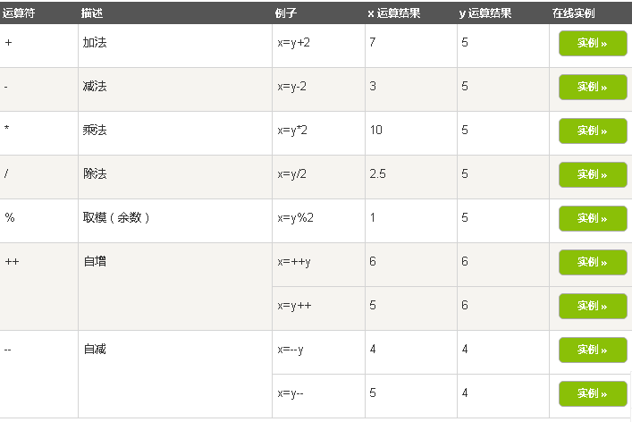
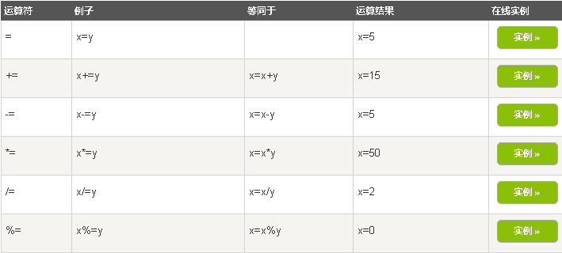

JavaScript 运算符
运算符 = 用于赋值。
运算符 + 用于加值。
运算符 = 用于给 JavaScript 变量赋值。
算术运算符 + 用于把值加起来。
实例
指定变量值，并将值相加：
y=5;
z=2;
x=y+z;
在以上语句执行后，x 的值是：
7
JavaScript 算术运算符

JavaScript 赋值运算符
赋值运算符用于给 JavaScript 变量赋值。
给定 x=10 和 y=5，下面的表格解释了赋值运算符：

用于字符串的 + 运算符
+ 运算符用于把文本值或字符串变量加起来（连接起来）。
如需把两个或多个字符串变量连接起来，请使用 + 运算符。
实例
如需把两个或多个字符串变量连接起来，请使用 + 运算符：
txt1="What a very";
txt2="nice day";
txt3=txt1+txt2;
txt3 运算结果如下:
What a verynice day
要想在两个字符串之间增加空格，需要把空格插入一个字符串之中：
实例
txt1="What a very ";
txt2="nice day";
txt3=txt1+txt2;
在以上语句执行后，变量 txt3包含的值是：
What a very nice day
或者把空格插入表达式中：:
实例
txt1="What a very";
txt2="nice day";
txt3=txt1+" "+txt2;
在以上语句执行后，变量txt3 包含的值是：
What a very nice day
对字符串和数字进行加法运算
两个数字相加，返回数字相加的和，如果数字与字符串相加，返回字符串，如下实例：
实例
x=5+5;
y="5"+5;
z="Hello"+5;
x,y, 和 z 输出结果为:
10
55
Hello5
规则:如果把数字与字符串相加，结果将成为字符串！